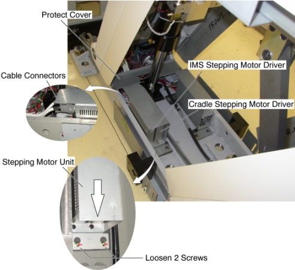

Operating Documentation
Direction 5193575-800, Rev# 5
LightSpeed 7.X Service Information - Adv
Operating Documentation |
| Required Persons | Preliminary Reqs | Procedure | Finalization |
|---|---|---|---|
| 1 |
| Last Revised: | 30 November 2006 |
| Item | Qty | Effectivity | Part# | Manufacturer | |
|---|---|---|---|---|---|
| Stepping Motor Driver (5123262) | 1 | - | - | - | |
Raise the Table to maximum height.
Move the Cradle and IMS to OUT limit position.
Remove power from Table by turning off 120VAC, Axial Drive and HVDC switch on Service Switch Panel.
Remove the following Table covers:
IMS Side Cover (Left)
Front Side Plate (Left)
Rear Side Plate (Left)
Front Leg Plate (Left)
Illustration 1: Table Covers

Disconnect 2 GND cables from the Table frame.
Remove 2 upper support brackets of the side plates (left) by unscrewing its 2 (x2) screws, and open the side plates (see Illustration 2).
Illustration 2: IMS Cover (Left) and Side Plates (Left) Removal

Remove the protect cover by unscrewing 2 screws.
Disconnect all cable connectors from 2 stepping motor drivers.
Loosen 2 screws behind the stepping motor driver unit, and slide it away from the Gantry, and remove it from the Table.
Remove the defective stepping motor driver from stepping motor driver unit, by unscrewing 2 screws.
Illustration 3: Stepping Motor Driver Removal

Re-install the Table Covers.
Power up the Table from the Service Switch Panel.
Verify that the cradle/IMS IN/OUT function is operating normally.